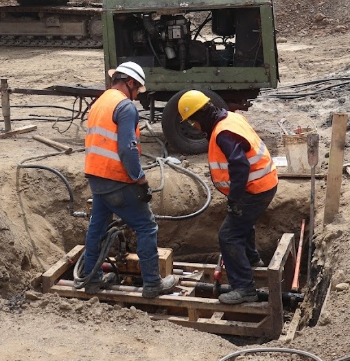
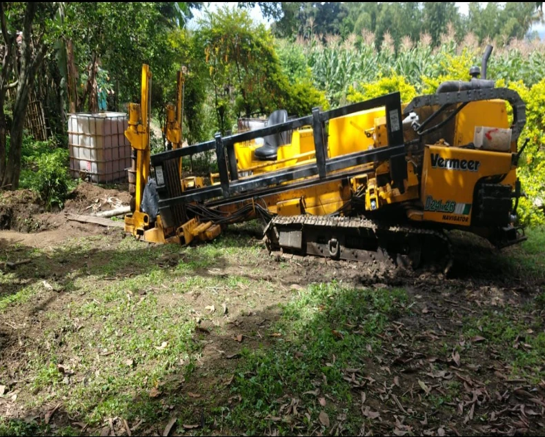
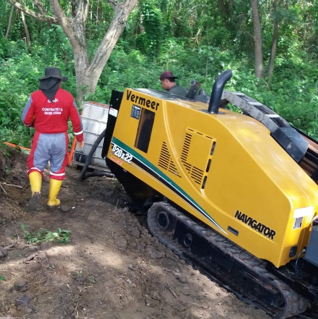

Tecnología HDD e Instalación Sin Zanja en Cali
CAMER
Especialistas en Perforación Horizontal Dirigida
Somos una empresa Vallecaucana con más de 14 años de experiencia y proyección a nivel nacional dedicada a la perforación horizontal dirigida

A SU SERVICIO
INNOVACIÓN Y
PROGRESO A TU
DISPOSICIÓN
En nuestra empresa, contamos con ingenieros sanitarios y estructurales altamente capacitados, conscientes de que este tipo de trabajos puede afectar la calidad del suelo e incurrir en fallas estructurales si no se realizan con los profesionales y conocimientos adecuados.
Desde nuestra fundación en 2011, hemos sido una empresa profesional en el sector de la construcción, dedicándonos a proyectos de acueductos, alcantarillados y edificaciones civiles.
A lo largo de nuestra trayectoria, hemos identificado la necesidad de ofrecer soluciones innovadoras a nuestros clientes. Especialmente en la instalación de tuberías, hemos adoptado métodos de perforación sin zanja, lo que nos permite el impacto ambiental y estructural, garantizando así la calidad y eficiencia de nuestro servicios.

Beneficios:

Menor
perturbación del
entorno y menor
impacto ambiental.

Reducción de
tiempo y costos.

Disminución del
riesgo de daños.

Mayor flexibilidad.

Menos
interrupciones.
Con más de 14 años de experiencia en el sector de la construcción, nos hemos consolidado como líderes en la instalación de tuberías. Nuestra metodología innovadora garantiza la máxima eficiencia y calidad en cada proyecto, minimizando el impacto ambiental y reduciendo costos.
Realizamos: Instalación de tuberías, Impact Moling-Topo misil, Pipe Bursting, Pipe Ramming, Rotomoling, Tunnel liner.
PHD vs Excavación Tradicional
Comparación técnica entre perforación horizontal dirigida y métodos convencionales de excavación abierta.
| Criterio | Perforación Horizontal Dirigida | Excavación Tradicional |
|---|---|---|
| Cierre de vía | ✓ No requiere | ✗ Sí, parcial o total |
| Impacto en tráfico urbano | ✓ Mínimo | ✗ Alto |
| Afectación a redes existentes | ✓ Baja | ✗ Alta — riesgo de daño por excavación abierta |
| Tiempo de ejecución en obra | ✓ Más rápido en ejecución | ✗ Mayor tiempo en superficie |
| Costo de restauración del terreno | ✓ Muy bajo — superficie casi intacta | ✗ Alto — pavimento, andenes, jardines |
| Impacto ambiental | ✓ Bajo — sin remoción masiva de tierra | ✗ Alto — remoción y disposición de material |
| Ruido y polvo | ✓ Reducido | ✗ Significativo |
| Viabilidad en cruces de ríos/vías | ✓ Sí, es su uso principal | ✗ Muy difícil o imposible |
PROYECTOS

PROYECTO TELECOMUNICACIONES MEDELLÍN, ANTIOQUIA

PROYECTO ALCANTARILLADO GUABAS, GUACARÍ

PROYECTO SISTEMA DE BOMBEO GUABAS, GUACARÍ

PROYECTO ALCANTARILLADO JULUMITO, POPAYÁN

PROYECTO ACUEDUCTO TRUJILLO, VALLE DEL CAUCA